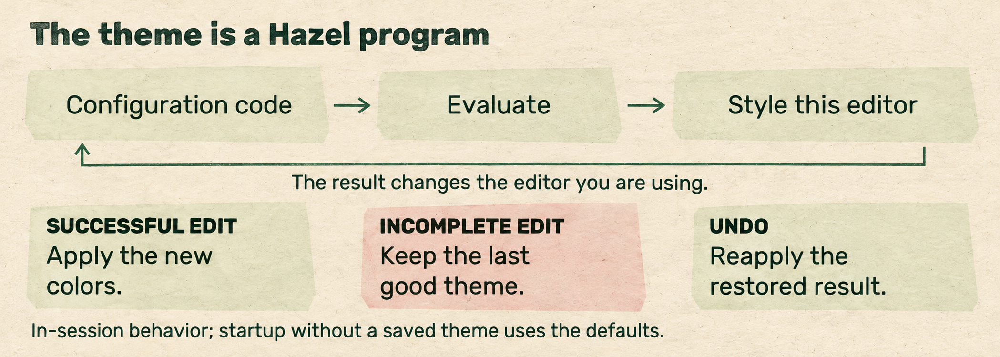
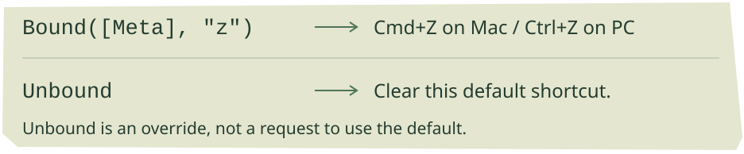
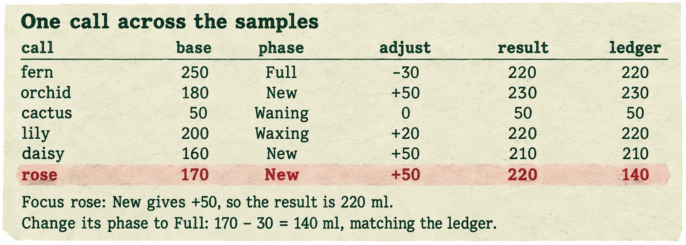
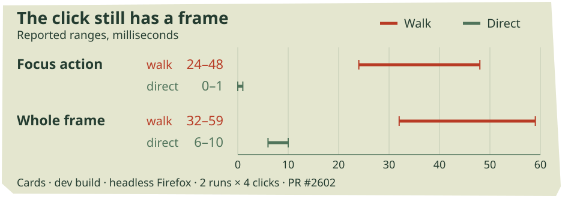
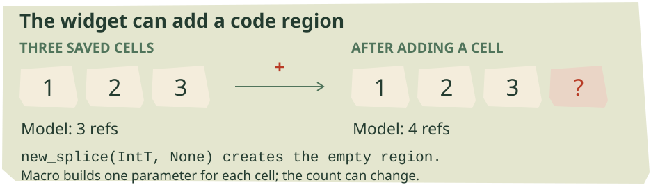
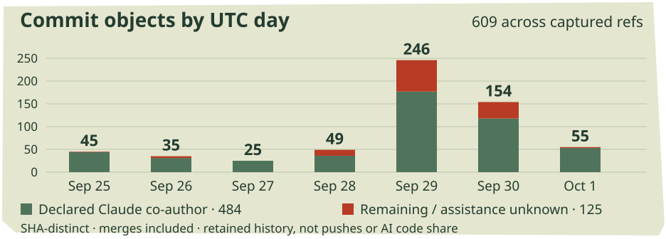

The controls are code.
Configuration mode and the Probes tutorial reach dev. Projector clicks take a shorter route. Livelits grow editable cells, while new cards put a running program on the graph.
In this issue
MERGED INTO DEV / SEPTEMBER 29
The controls are code



Source-derived behavior: successful theme evaluation changes the interface; an unfinished edit keeps the last good theme. Undo must reconcile both the program and the painted document.
Configuration mode has reached dev. Alexander’s long-running #1591, incorporating Matthew’s color-scheme work, gives Hazel two programs that configure the editor itself: Color Scheme and Shortcuts. Last week’s theme vocabulary now drives a mode in shared development.
The Color Scheme program starts with two checkbox projectors, dark_mode and high_contrast. They compose: both checked selects a high-contrast dark scheme. Farther down, color projectors edit the palette, with an OKLCH picker and an RGB tab. A theme can calculate colors as well as contain literals; the program produces a typed ColorScheme, which Hazel applies to the surrounding interface. Merged theme program
That feedback needs a recovery rule. A half-written theme may not evaluate, but losing the last good colors would make fixing it unnecessarily unpleasant. The implementation applies a new theme only after successful evaluation. During an invalid edit, the old theme stays up. A cached copy is read before the loading screen paints, and startup establishes the theme even when the user returns to Scratch rather than Configuration. With no usable cache, stylesheet defaults remain available. Startup and update behavior
Undo exposed the other direction of the feedback loop. Restoring an older editor model changes the program and its result, but does not by itself undo CSS properties already written to the document. Configuration now reconciles the painted theme with the current evaluated value, so undo cannot leave the interface wearing colors from a future it has just discarded.
The landing also adds make lint-css: component stylesheets should consume the theme’s named roles, with hardcoded colors rejected except for supported derivations such as fading an existing theme color. The check is not yet in CI. Matthew’s open #2613 replaces eleven references to undefined theme variables, which could leave fills black or inheriting the wrong color. Style ownership
MERGED CONFIGURATION / OPEN SETTINGS FOLLOW-UP
Change a chord, keep the command


The binding stores the platform modifier. The projector presents the local keycap, while Unbound deliberately removes a default.
The second configuration program turns command shortcuts into ordinary typed values. Its fields are grouped like the command palette, and each binding arrives wrapped in a click-to-record projector. Click a chord, press its replacement, then Escape or click away to finish. Removing the projector reveals the underlying value, such as Bound([Meta], "z"); the UI and the program are editing the same binding. Shortcut generation
Meta means the platform modifier rather than a literal Command key. A recording made on a Mac therefore expresses the corresponding platform shortcut elsewhere. Enter, Tab and Backspace can themselves be recorded; Escape is reserved for finishing. Setting Unbound clears an action’s default instead of silently falling back to it. The action registry supplies the palette, the slide and its expected type, reducing the opportunities for their lists to disagree. Keybinding projector
Shortcuts take a different route from colors after evaluation. CSS properties can live on the document through a rerender. A command palette is rebuilt as the cursor moves, so the evaluated shortcut overrides are stored in settings and reapplied during that rebuild. Merely changing the currently displayed palette would lose the customization on the next refresh.
A place to read the settings. Andrew’s new #2630 proposes a persistent right sidebar behind the gear, replacing the disappearing hover menu. Sections fold, a filter narrows the list, and descriptions explain the controls. Fold choices persist while the search is temporary; Stepper and Developer begin folded. This remains an open PR. Configuration mode is already on dev, but this different way of navigating the surrounding settings is still under review.
MERGED TUTORIAL / DRAFT PAPER ARTIFACT
Follow one plant through the program



A source-derived extract from Aligning Samples. Rose’s recorded allowance is 140 ml; the call with New yields 220. The lesson uses aligned samples to locate the wrong argument.
The Probes tutorial and its study tasks are now on dev. Andrew’s #2364 adds 29 slides to the existing tutorial collection, including nine substantial writing and debugging tasks. The exercises use Night Gardener, an imaginary farming game. Basics / Probes now points readers toward this separate folder.
In “Aligning Samples,” six plants have a watering ledger, but one call uses the wrong moon phase. Probe watering_amount, select a plant-name sample, then use the arrows to follow calls: the name stays aligned with its computed amount. Rose receives 220 ml instead of the ledger’s 140. Changing its phase from New to Full repairs the discrepancy and brings the total to 1070. Lesson source
The reference panel progresses through placement, variables, multiple samples, alignment, automatic probes, bigger values, pins and stepping. Writing tasks start with ambient probes; debugging tasks leave placement to the learner. Leaving the folder restores the visitor’s previous settings. Lesson configuration
Also merged: rich cards in Many mode retain their natural height, fixing vertical shifts of neighboring cards on focus changes. The intentional depth stagger remains. #2615
The artifact has different focus rules. Andrew’s draft #2633 prepares the Live Probes paper artifact, probably not for merging as-is. After editing an aligned nested-map example, automatic focus used to move from n = 1 to n = 2 and hide a relevant sample. Automatic movement now only fills an alignment gap; explicit sample selection still moves focus. “Pin enclosing call” now takes the enclosing call’s span.
The artifact also preserves call paths across worker restarts with repeatable library-term IDs. Its October 1 discussion still lists diffuse first focus after paste and a stale-focus fallback that can select an unrelated callback. These remain artifact-branch findings. Open follow-ups
DEV LANDING / FEATURE CARDS / RESEARCH DRAFT
Give the next turn the new result
Agent hardening has reached dev after its earlier branch coverage. The central interaction is an ordinary edit–observe loop: an agent changes code or places a probe, then needs the resulting errors, tests and samples for its next decision. Sending immediately could deliver old results or an empty sample. Follow-up dispatch now waits for pending statics and worker evaluation, checking every 150 milliseconds for roughly ten seconds before proceeding. The limit prevents an indefinitely pending evaluation from holding the conversation forever; it is not a guarantee that every result has arrived. #2427, dispatch gate
Structural edits use the batch parser, with recovering fallback limited to 3,000 characters and guidance when a replacement cannot be parsed. Module paths, dotted aliases and named-function bindings receive more careful handling. Cleanup stays near the changed boundaries, preserving unrelated formatting, holes and unchanged syntax objects. This landed identity reuse is scoped to the selected region; it does not incorporate the separate IdMatch PR covered last week.
Saved conversations also become leaner. Unmodified builtin prompts can be reconstructed, tool registries are rebuilt on load, and snapshots and diffs remain text until a reader navigates the timeline or opens a diff. Legacy saved conversations still have a decoding path. Storage remains one agent record per slide. The new documentation registry is intentionally empty, so read_docs is not yet offered. Nor does this merge bring Constellation or modular editors onto dev.
Constellation can hold the game. Constellation’s new cards can display values or operate the program. On Type Cards / Tic-Tac-Toe, double-click Board to open a board card, then step its samples: Player and Outcome follow the same game step. Opening ^game instead gives the live app; clicking a cell appends a move to its program value. The action is routed through the live master program even while a definition cell is open, avoiding commits into a stale copy. Andrew’s #2563 merged into agent-canvas, not dev. The new view connects the type graph to both recorded execution and a writable interface.
A faster decision-maker, experimentally. Russell’s draft #2612 pairs Jev’s yes/no and multiple-choice decisions with agent navigation and typed-hole edits. In the first eight reported runs, none of the setups beats the original agent: navigation opens too much code, and construction lacks enough typed options. The draft includes a headless evaluation harness and lab-notebook generator. It is research material, not a proposed replacement for the dev agent.
MERGED INTO DEV / OPEN PERFORMANCE FOLLOW-UPS
Stop walking to the click


Author-reported Cards timings: two runs of four focus clicks in headless Firefox, development build. Action time and whole-frame time are separate measurements, not quantities to add.
Clicking a projector could spend most of its time getting the caret there. The old jump went to an end of the program, then walked back token by token until the requested piece was beside it. On the livelit branch, Tree Care made that cost conspicuous: its widget sits after roughly 2,100 tokens. Matt’s #2602 now constructs the destination zipper directly, retaining the walk for targets inside projector syntax and other unsupported cases. It landed on dev on September 29. #2602, merged implementation
On the Cards slide, Matt reports the focus action falling from 24–48 to 0–1 milliseconds, and its whole frame from 32–59 to 6–10 milliseconds. Those are dev-build measurements in headless Firefox: two runs of four clicks on the final card. The distinction matters: eliminating caret travel does not eliminate the rest of the frame. Differential tests compare the resulting zipper, including IDs, with the walk’s result. Measurement and test scope
Andrew’s open follow-up extends that approach to Select All, start/end movement, and selecting terms by ID. Its 400-line example reports Select All dropping from 2,973 milliseconds to a displayed zero. That zero is a timing observation, not a claim of no work. Far clicks and Shift+Cmd+Home/End still walk. #2626
The same livelit profiling produced several open fixes against dev. In #2603, nested helper functions reveal statics repeatedly analyzing definitions through the recursive path. The branch keeps the initial analysis when a function does not mention its own binders and those binders shadow nothing. The shadowing condition is essential: reusing the analysis indiscriminately mis-scopes names. Smaller changes index builtin lookups, avoid repeated type meets, and prune impossible qualified completions. #2603, reuse conditions
The PR reports identical CLI analysis output across 72 programs, but the September 30 review records an editor-visible tradeoff: inside an unannotated function that never calls itself, its own binder can appear as f : ? rather than its function type. Hover and completion see that difference even though the program’s type and elaboration agree. Review account
OPEN PRS / PERFORMANCE AND CORRECTNESS
What the next edit has to carry
An evaluation response also used to carry its incremental cache to the client, which sent it straight back with the next request. #2606 keeps finished caches in the worker. Its September 30 correction keys them by document and position: Scratch’s position key is always empty, so position alone let one slide displace another’s cache. The repair restores reuse when returning to a slide. #2606, held-cache implementation
For the Tables reference slide, the PR reports responses shrinking from 176 to 3.3 KB. These are marshaled bytes, not measured round-trip times. Independent #2608 removes whitespace and comments from elaborations sent to the worker, where they are unused; source terms retain them. Neither change has landed on dev. #2606, #2608
A separate correctness report keeps reuse itself under scrutiny. Andrew reproduced an ID-preserving change from let r : Int = 9 in r to a Bool annotation returning stale 9 with a seeded cache, while a cold run produces the failed cast. This was an evaluator reproduction, not an observed UI failure; the app enables seeded evaluation only at 2,500 statics entries. It is a dev issue, not evidence that moving caches into the worker introduced it. #2634
Open #2614 batches characters that remain one token and regrouts once after loading, rather than after every insertion. Ordinary typing and the paste optimization remain outside that change. Its 72-program load comparison falls from 217–222 seconds to 87; the claim concerns the recovering parser, not normal keystroke latency. #2614
Larger livelit slides then exposed a memory bug: the new loop retained each intermediate zipper, overflowing the stack or exhausting a 4 GB heap. A direct recursive call, compiled into a loop, repaired it. The subsequent review still found one placement difference among 57 chosen inputs: an empty case-pattern hole moves across a space, changing the caret position despite identical printed text. Loop repair, review
Andrew’s open undo-memory PR addresses retained history differently. It drops syntax and statics that restoration rebuilds, keeps evaluation results only for the newest eight entries, and always caps undo at 1,000. Forty edits to a 151-line program reportedly retain 27 MB rather than 159 MB after garbage collection. The boundary is still substantial: the estimate reaches 1.9 GB at the cap for 964 lines, and Exercise models remain unslimmed. #2628, history policy
OPEN FOR REVIEW / LIVELIT INTEGRATION
A widget can make another cell


Source-derived Dynamic Row or Column example. Three editable cells begin at 1, 2 and 3. The widget displays their sum; its macro expansion produces the list of their values.
Last week's livelit branch had a Macro alternative that could only produce a hole, and its editable regions were fixed by the source. Both limits changed this week. Matt's #2597 now runs commands that create, read and write splices, and expands quoted Hazel code into a working program. It became ready for review on September 27. This remains feature-branch work, not a dev landing.
The Dynamic Row or Column example makes the difference visible. Its init creates three cells with new_splice; each + creates an empty cell, and × drops a cell's reference from the model. The view asks eval_splice which cells have values and shows their sum. An empty cell can therefore be counted and presented deliberately, instead of stopping the widget from deciding what to draw. Rotating the row changes its arrangement while keeping the same cells. Example source
The program's meaning grows with it. The saved three-cell example evaluates to [1, 2, 3]; its Macro builds a function with one parameter per cell, then lists the splices supplying those parameters. quote ... end holds Hazel code, unquote ... end inserts computed code, and Abs gives a generated binder a name the client's program cannot accidentally capture. The implementation binds the model once and takes each splice's already-computed value from it, avoiding a second evaluation of the client's expression. Expansion implementation
Commands also change authorship. init and update return update commands; view returns view commands. A do block sequences them, ending with Pure(...). The editor performs those commands and commits the resulting model and splice edits together. new_splice retains a declared type through an ascription in the program text. The splice keeps that declared type instead of relying only on its position in the model to supply one. The command types are separated, although the visible SpliceRef constructor still leaves ways to bypass the intended boundary between reading and updating.
FEATURE MERGE / REMOTE SPLICES / DRAFT INTEGRATION
Show the program under the control
Merged into the livelit feature branch on October 1, #2632 adds a </> toggle at a livelit's corner. It exposes that use's syntax as an editable pane beneath the GUI. On Parameters, changing ^percent(25) to ^percent(40) in the pane moves the slider and changes the example's total from 28 to 43. The flag is written as the _syntax suffix on the projector invocation, so choosing to show the pane survives a text round trip.
The pane uncovered two editor assumptions. Leaving a projector's splice rebuilt it without its placement or shown-syntax flag; the ancestor now retains both. And treating the whole-syntax splice as Any could separate a livelit's name from its model while typing. The correction gives that splice its content's sort. The same PR permits a direct parameterized use, ^slider(0, 100)(50), without first naming an abbreviation. Its range arguments must be closed; client-dependent expressions belong in splices. Parameters tests
A splice with an outside correspondent. The separate open experiment #2616 connects splices to named cells in a Fumola instance. A RemoteRef records the instance, cell, direction and ordinary splice handle. After a run, the view pulls changed Out cells back into Hazel through splice-write effects. In cells still require the program to send their contents explicitly; this is not a complete automatic two-way protocol.
Its sorting example sends [3, 1, 4, 1, 5] through ById, pairing each element with a symbol derived from its source identity. The two equal 1s remain distinct inputs. A second example embeds a Fumola tile editor, with an archivist recording reads and writes and an editor inspecting the resulting history. Editing speed, conflicting writes, undo and update loops remain open questions.
Matt also opened draft #2635, combining livelits with Andrew's modular editors. Initial measurements found whole-program statics rerunning after each worker answer: livelits add sampling targets that the probe-change test mistook for changed pins. The fix compares the actual pins, while the cell editor retains its incremental settings on the second pass. Matt reports the Kids' Choice slider response dropping from 20.6 to 2.26 seconds in five headless-Firefox development-build runs. Eight test failures remain reported; per-member analysis inside modules is disabled pending its adaptation to Modules II. This is a reviewable integration experiment, not a finished performance result. Dated measurement and fix
MERGED INTO DEV / SMALL REPAIRS
Back to the same floor

Fiction department: the semicolon has been sending colleagues upstairs. Inspired by the module-member indentation repair in #2624.
The next member is a sibling. A module containing a multiline function followed by let g = 2; let h = 3 could push each later binding another level to the right. Andrew’s #2624, merged September 30, makes the line break after a module semicolon return to the member level. Expression semicolons keep their existing behavior. Two regression tests pin the distinction.
This is a follow-up to last week’s report that canonical completion had addressed the module-body indentation problem. The multiline case remained. In review, Alexander noted that he had thought the earlier #2579 was already covered. The new regression examples identify the boundary the earlier repair missed.
A capital letter does not settle the name. Andrew’s #2506 also landed. If a constructor called Text is followed by a module binding called Text, expression lookup now uses the more recent binding: Text.f(0) can access the module instead of treating Text as the constructor and reporting an expected tuple. Pattern lookup is unchanged.
Two unreliable tests. #2408 landed fixes for seed-dependent QCheck failures: generated constructor names could be reserved names, while a weak-head-normalization property needed its appropriate allowlist. They complete the week’s eight PR merges into dev.
SEPTEMBER 25–OCTOBER 1 / A BRANCH CENSUS
The week in numbers


SHA-distinct commit objects by UTC committer date. Green marks declared Claude co-authors; the other segment includes assistance that was not declared.
Daily counts as a table
| Date | All | Declared Claude co-author |
|---|---|---|
| 2026-09-25 | 45 | 44 |
| 2026-09-26 | 35 | 31 |
| 2026-09-27 | 25 | 25 |
| 2026-09-28 | 49 | 36 |
| 2026-09-29 | 246 | 177 |
| 2026-09-30 | 154 | 118 |
| 2026-10-01 | 55 | 53 |
The week contains 11 merged PR records: eight targeting dev and three targeting feature branches. The feature landings are canonical completion’s integration into modular editors, Constellation’s type and live-app cards, and the livelit syntax pane. Their destinations explain what readers can expect from dev; a merge record alone does not.
29 PRs opened, three marked draft at retrieval. Across 729 captured remote heads, the census finds 609 SHA-distinct commit objects with committer dates inside the week: 484 non-merge commits and 125 merges. Seventy-five captured tips have dates in the window. These are retained Git objects, not pushes, independent changes or a productivity score.
484 commits carry a Claude/Anthropic co-author declaration, including 471 non-merge commits. Zero carry the OpenAI/Codex/ChatGPT declarations recognized by this census. Separately, 123 have a cryptographic signature header. Those categories can overlap. A declared co-author and a signature describe different properties, and neither measures how much code an agent wrote. Undeclared assistance remains unknown.
Tuesday’s 246 objects and Wednesday’s 154 dominate this snapshot. Several feature stacks were rebased around the dev landings, so the daily shape mixes new work with integration history. The same all-ref method found 288 objects last week; the comparison is useful as a view of repository activity, with the changing captured branch set kept in mind.
Reporting window: September 25–October 1, 2026 UTC. Sources retrieved October 2; cutoff dev 9b3f18323a. Benchmarks are attributed reports, not measurements rerun for this issue. Technical figures explain source examples; the web switches and companion PDF retain their exact originals.
AI editor: Astra. Reporting audits: Astra agents covering performance, livelits, and probes and agent features. Cover, comic and light stamp treatments: ImageGen.